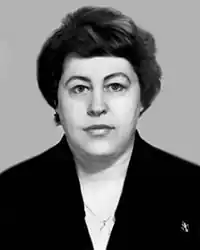
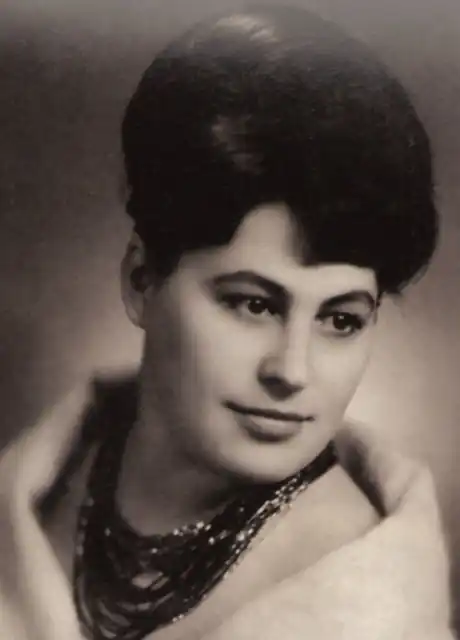

Творчість Валерії Врублевської пов′язують із такими видатними особистостями, як Крушельницька, Кобилянська, Цвєтаєва. Усі вони стали героями її творів. Її п′єси з успіхом ставилися в Радянському Союзі і за рубежем. Тільки її п′єса "Кафедра" йшла у 80-ті роки більш ніж в 40 театрах країни, в тому числі на сцені Київського театру російської драми вона витримала 300 аншлагів. А фільм "Повернення Батерфляй" за її сценарієм увійшов у число 100 найкращих кінострічок України.
Народилася Валерія Василівна в Житомирі 19 грудня 1938 року. Читати навчилася в п′ять років з газет. Книжок до війни не бачила взагалі. На горищі старого будинку знайшла дитячі книжки з малюнками. Як згадує письменниця: "… З тієї хвилини до мене прийшло відчуття, що немає більшого щастя на світі,ніж читати і писати".
Після закінчення школи поступила в Житомирський геодезичний технікум. У 18 років вийшла заміж за викладача політекономії технікуму Віталія Врублевського, в 19 народила сина. Після того як технікум було переведено в Ярунь Новоград-Волинського району, сім′я переїхала за місцем нової роботи чоловіка. Згодом чоловік закінчує в Києві аспірантуру і стає викладачем Київського університету. Валерія вступає до університету на філологічний факультет, який успішно закінчує в 1968 році. Після закінчення аспірантури працює старшим науковим співробітником Київського філіалу інституту наукового атеїзму Академії суспільних наук при ЦК КПРС. В ці ж роки починається її письменницька діяльність. Коли вийшла її перша дитяча книжка "Перстень" (1969 р.), чоловік, знаючи її суперечливий характер, радив писати тільки для дітей. Але вона жила протиріччями, властивими художнику. Чоловік в ті роки займав високу посаду в апараті В. Щербицького. Її вважали вдачливою, їй заздрили. Але за зовнішнім благополуччям завжди приховувався якийсь надлом. Сьогодні Валерія Врублевська авторка книг: "Перстень" (1969), "Несподівані мандри" (1974), роману-біографії "Соломія Крушельницька" (1986), романів і повістей "Емансипантки" (1989), "В тени деревьев, которых нет", "Женщина и гипнотизер", "Век мой – враг мой", сценаріїв і п′єс "Кафедра", "Возвращение Батерфляй", "Первоцвет", "Визави", "Перекресток", "Призвание", "Искушения Хомы Прута", "Окаянные женщины" та інших. Як драматург Валерія Врублевська набула слави п′єсою "Кафедра". В 1981 році ця п′єса йшла і на сцені Житомирського муздрамтеатру. Ще ніколи зі сцени театру так відверто не говорилось про виразки суспільства. Зміст п′єси актуальний і сьогодні. Друге життя "Кафедрі" дав Львівський театр ім. М. Заньковецької, який знову поставив п′єсу в 2007 році, враховуючи ті зміни, що відбулися в житті нашого суспільства. Сенсаціями в літературному житті були біографічні романи В. Врублевської про С. Крушельницьку і останній про О. Кобилянську. Письменниця пройшла у стихію духовного і творчого життя цих двох великих жінок і збагатила українську літературу талановитими художньо-документальними творами. Сама письменниця розглядає свої книги як здійснення давньої мрії – створення художніх портретів плеяди прославлених жінок.